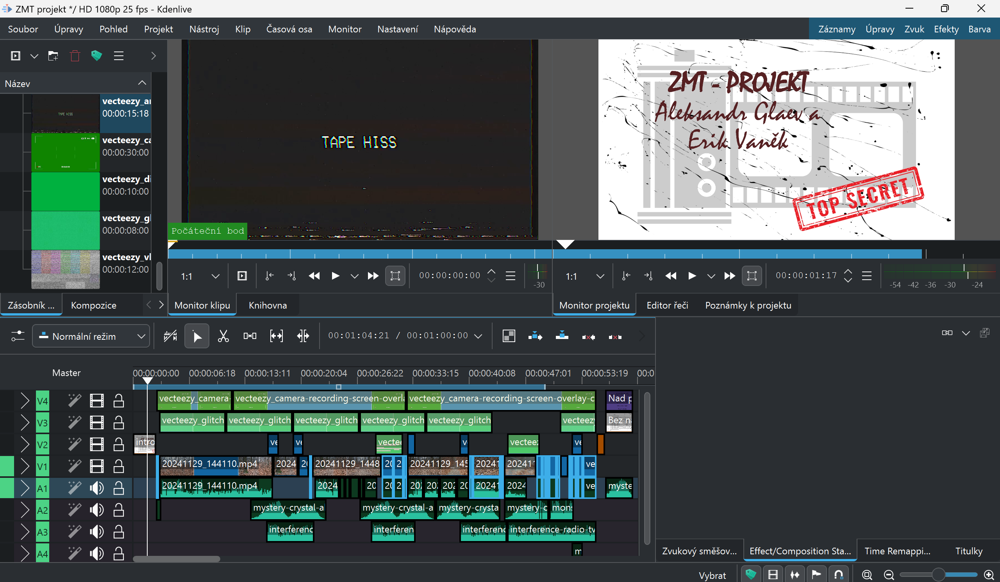
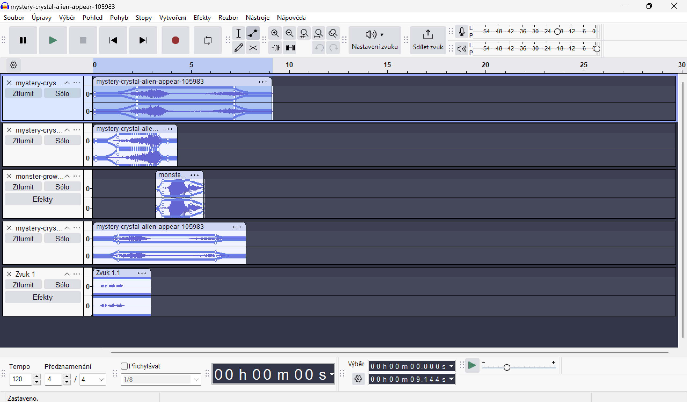
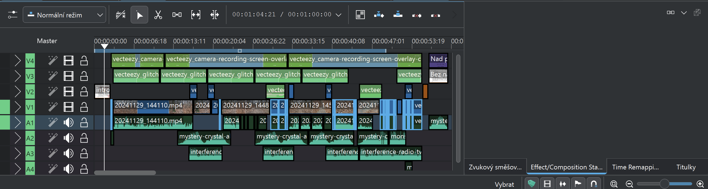
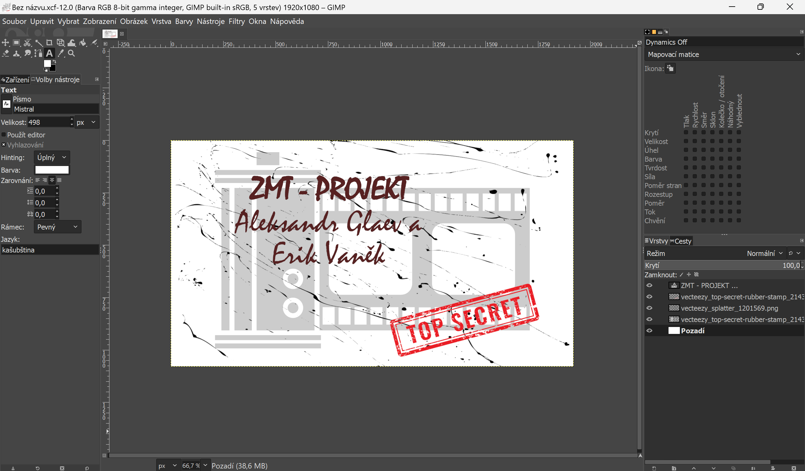

Představení projektu
„Minutka strachu“ je krátký hororový film inspirovaný atmosférou her jako Soma nebo Phasmopbohia. Cílem projektu bylo vyzkoušet si převážně práci s efekty. Zároveň jsme se přiučili lehké organizaci, herecké imporvizaci a režii.
Vytvořili: Aleksandr Galaev, Erik Vaněk - ČVUT SIT (ZMT) 2024/25
Video
Obsazení
- Aleksandr Galaev: střih, kamera
- Erik Vaněk: herec, prezentace
- Agáta Kováčiková: příšerka
Parametry Videa
- Délka: 59.99 sekund
- Rozlišení: 1920x1080
- BitRate: 21015 kbps
- FPS: 25
- Kodek: H264
Parametry Zvuku
- BitRate: 156 kbps
- Sample Rate: 48 kHz
- Kodek: MPEG-4
Technické detaily
Efekty:
Použili jsme převážně barevné klíčování. V rámci navodění děsivé atmosféry, jsme zvolili styl vhs kamery a tv glitch.
Práce s audio sekvencemi:
Úprava zvukových efektů a stop v Audacity, hlavně pomocí obalové křivky.
Střih:
Celý projekt byl sestříhán v Kdenlive.
Titulky a grafika:
Jednoduchá úvodní a závěrečná obrazovka byla vytvořena v GIMP.
Použité nástroje
- Kdenlive: Střih a barevná korekce
- Audacity: Zvuková produkce
- GIMP: Tvorba intro a outro grafiky
- Samsung S23 Ultra: Kamera - natáčeno v UHD 60FPS
Zdroje
- Pixabay.com: Zvukové efeky příšerky
- Vecteezy.com: Green-screen videa, vhs-styl, tv-glitch a camera-effect